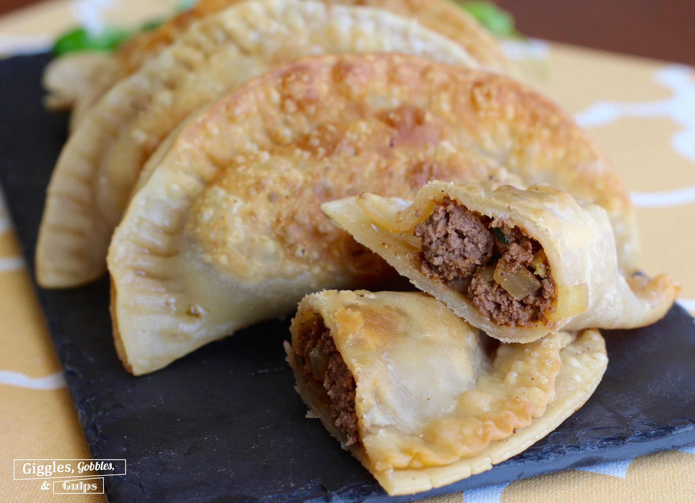

Pastelillos

Crispy and delicious!
An easy classic, pastelillos are a perfect for a picnic lunch, or whenever you crave them!
Ingredients
- 3 1/2 cups flour
- 2 tsp baking powder
- 2 1/2 tsp salt
- 1/4 cup vegetable shortening
- 1 egg, beaten
- 3/4 cup water
- vegetable oil (for frying)
- 4 cups picadillo (or fully cooked and seasoned ground beef)
Instructions
Dough
- Into a large bowl, sift flour, baking powder, and salt.
- Add flour and shortening in a large bowl. Using a pastry cutter or fork cut the shortening into the flour. Add the egg and mix using a fork.
- Add the water a little at a time, mixing with a fork until brittle and slightly crumbly.
- Dust a work surface with flour, turn the dough out on the work surface. Press the dough together into a rough ball. Knead until soft, smooth and homogeneous.
- Form dough into a ball, cover with plastic wrap at room temp for 30min
- Line a sheet pan with parchment paper. Using a rolling pin, roll dough out until thin, about 1/8th of an inch. Using a biscuit or cookie cutter, cut out circles about 6in in diameter (3in radius)
Assembly and Frying
- Take a dough round and place a spoonfull of filling in the center (filling should fit comfortably in the center)
- Using the tip of your fingers wet the edges of the dough with water. Fold over to make a half-moon. Pinch the dough together using your fingers, then go over it, pressing it with the teeth of a fork. Return to sheet pan and cover. Repeat with remaining rounds and filling.
- Line a large plate with paper towels. Heat 1 1/2 inches of oil to 350 degrees in a large deep skillet. Working in batches, carefully place turnovers into the oil.
- They should almost immediately begin to puff and float, cook on each side about 2 minutes, or until golden brown and crispy.
- Transfer to a wire rack to drain and let cool.